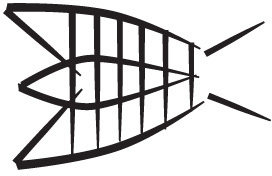
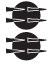
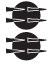

Search¶
Search is essential to get around in the corpus, and it is convenient as well. Whereas the whole point of Text-Fabric is to move around in the corpus programmatically, we show that template based search makes everything a lot more convenient …
Along with showing how search works, we also point to pretty ways to display your search results.
The good news is that search and pretty work well together.
%load_ext autoreload
%autoreload 2
import sys, os
import collections
from IPython.display import display, Markdown
from tf.app import use
A = use('uruk:clone', checkout="clone", hoist=globals())
# A = use('uruk', hoist=globals())
Data: URUK, Character table, Feature docs
Features:
The basics¶
Here is a very simple query: we look for tablets containing a numeral sign.
query = '''
tablet
sign type=numeral
'''
results = A.search(query)
0.23s 38122 results
We can display the results in a table (here are the first 5):
A.table(results, end=5, condenseType="line")
| n | p | tablet | sign |
|---|---|---|---|
| 1 | P006427 obverse:2:1 | P006427 | 3(N14) .jpg) |
| 2 | P006428 obverse:3:2 | P006428 | 3(N14) |
| 3 | P006428 obverse:3:3 | P006428 | 1(N14) |
| 4 | P006428 obverse:3:5 | P006428 | 1(N01) .jpg) |
| 5 | P006428 obverse:3:5 | P006428 | 1(N57) .jpg) |
We can combine all results that are on the same tablet:
A.table(results, condensed=True, condenseType='line', end=5)
| n | p | line | sign | ||
|---|---|---|---|---|---|
| 1 | P006427 obverse:2:1 | 3(N14) X SANGA~a  [...] [...] | 3(N14) | ||
| 2 | P006428 obverse:3:2 | 3(N14) X | 3(N14) | ||
| 3 | P006428 obverse:3:3 | 1(N14) SUHUR  | 1(N14) | ||
| 4 | P006428 obverse:3:5 | 1(N01) |DUG~bx1(N57)| |.jpg) | 1(N01) | 1(N57) | |
| 5 | P448701 obverse:1:1 | 1(N46) .jpg) 2(N19) 4(N41) 2(N19) 4(N41) .jpg) | 2(N19) | 4(N41) | 1(N46) |
And we can show them inside the face they occur in:
A.show(results, condenseType='face', end=2, skipCols="1")
result 1
result 2
The feature type is displayed because it occurs in the query. We can make the display a bit more compact by suppressing those features:
A.show(results, condenseType='face', end=2, queryFeatures=False, skipCols="1")
result 1
result 2
Finding a tablet¶
Suppose we have the p-number of a tablet.
How do we find that tablet?
Remembering from the feature docs that the p-numbers are stored in the feature
catalogId, we can write a search template.
query = '''
tablet catalogId=P005381
'''
results = A.search(query)
A.table(results)
0.01s 1 result
| n | p | tablet |
|---|---|---|
| 1 | P005381 | P005381 |
The function A.table() gives you a tabular overview of the results,
with a link to the tablet on CDLI.
But we can also get more information by using A.show():
A.show(results)
result 1
.jpg)


.jpg)


.jpg)


.jpg)

)+(HI+1(N57)))|.jpg)


Several things to note here
if you want to see the tablet on CDLI, you can click on the tablet header;
the display matches the layout on the tablet:
faces and columns are delineated with red lines
lines and cases are delineated with blue lines
cases and subcases alternate their direction of division between horizontal and vertical: lines are horizontally divided into cases, they are vertically divided into subcases, and they in turn are horizontally divided in subsubcases, etc.
quads and signs are delineated with grey lines
clusters are delineated with brown lines (see further on)
lineart is given for top-level signs and quads; those that are part of a bigger quad do not get lineart;
It is possible to switch off the lineart.
More info in the results¶
You can show the line numbers that correspond to the ATF source files as well. Let us also switch off the lineart.
query = '''
tablet catalogId=P005381
'''
results = A.search(query)
A.table(results, lineNumbers=True)
A.show(results, lineNumbers=True, showGraphics=False)
0.01s 1 result
| n | p | tablet |
|---|---|---|
| 1 | P005381 | @85111P005381 |
result 1
There is a big quad in obverse:2 line 1. We want to call up the lineart for it separately.
First step: make the nodes visible.
query = '''
tablet catalogId=P005381
'''
results = A.search(query)
A.table(results, withNodes=True)
A.show(results, withNodes=True, showGraphics=False)
0.01s 1 result
| n | p | tablet |
|---|---|---|
| 1 | P005381 | 148166P005381 |
result 1
We read off the node number of that quad and fetch the lineart.
A.lineart(143015)
Search templates¶
Let’s highlight all numerals on the tablet.
We prefer our results to be condensed per tablet for the next few shows.
We make that the temporary default:
A.displaySetup(condensed=True)
query = '''
tablet catalogId=P005381
sign type=numeral
'''
results = A.search(query)
A.show(results, queryFeatures=False)
0.14s 10 results
tablet 1
We can do the same for multiple tablets. But now we highlight the undivided lines, just for variation.
query = f'''
tablet catalogId=P003581|P000311
line terminal
'''
results = A.search(query)
0.03s 11 results
A.table(results, showGraphics=False, withPassage=False)
| n | tablet | line | line | line | line | line | line |
|---|---|---|---|---|---|---|---|
| 1 | P000311 | [1(N01)] [...] IR~a | [1(N01)] ERIM2 | 1(N01) NIMGIR SIG7 | 1(N01) U2~b NAGA~a MUSZEN ZATU647 BA | 1(N01) IM~a [...] | [N] [...] |
| 2 | P003581 | 5(N01) U2~a [...] | 1(N01) X [...] | 1(N14) [...] SUHUR [...] | 5(N14) 1(N01) [...] U2~a | |GI&GI| GU7 |
A.show(results, showGraphics=False, condenseType="tablet")
tablet 1
tablet 2
In an other chapter of this tutorial, steps we encounter a grapheme with a double prime. There is only one, and we showed the tablet on which it occurs, without highlighting the grapheme in question. Now we can do the highlight:
results = A.search('''
sign prime=2
''')
0.11s 1 result
A.show(results)
tablet 1


.jpg)

.jpg)
.jpg)

.jpg)

.jpg)
.jpg)
Comparisons in templates: cases¶
Cases have a feature depth which indicate their nesting depth within a line. It is not the depth of that case, but the depth at which that case occurs.
Comparison queries are handy to select cases of a certain minimum or maximum depth.
We’ll work a lot with condensed=False, and lineart likewise, so let’s make that the default:
A.displaySetup(condensed=False, showGraphics=False)
query = '''
case depth=3
'''
results = A.search(query)
A.table(results, end=10)
0.01s 254 results
| n | p | case |
|---|---|---|
| 1 | P003357 obverse:1:1 | 1b1AEN~a ZATU759 DU |
| 2 | P003357 obverse:1:1 | 1b1B3(N57) SU~a |
| 3 | P003537 obverse:5:4 | 4b1A3(N57) X SZA U4 [...] X |
| 4 | P003537 obverse:5:4 | 4b1BX X |
| 5 | P003537 obverse:5:4 | 4b2A2(N57) GAN~b SZU [...] |
| 6 | P003537 obverse:5:4 | 4b2BX [...] |
| 7 | P003589 obverse:1:3 | 3b2A|GA~a.ZATU753| |
| 8 | P003589 obverse:1:3 | 3b2BMUD [...] |
| 9 | P003822 obverse:1:1 | 1a2A[...] [...] |
| 10 | P003822 obverse:1:1 | 1a2B[...] PAP~a SU~a |
Are there deeper cases?
query = '''
case depth>3
'''
results = A.search(query)
A.table(results, end=10)
0.01s 119 results
| n | p | case |
|---|---|---|
| 1 | P004735 obverse:2:1 | 1b1B1(NAB DI |BU~a+DU6~a|)a |
| 2 | P004735 obverse:2:1 | 1b1B2(ZI~a#? AN)a |
| 3 | P004735 obverse:2:1 | 1b1B3(ANSZE~e 7(N57) DUR2 DU)a |
| 4 | P004735 obverse:2:1 | 1b1B4(LAL3~a#? GAR IG~b)a |
| 5 | P004735 obverse:2:2 | 2b2B1(GI6 KISZIK~a# URI3~a)a |
| 6 | P004735 obverse:2:2 | 2b2B2([...])a |
| 7 | P218054 reverse:1:1 | 1a1A1[...] 5(N01) [...] UDU~a |
| 8 | P218054 reverse:1:1 | 1a1A2[...] 7(N01) MASZ2 |
| 9 | P325754 reverse:1:1 | 1c2b11(N01) [...] |
| 10 | P325754 reverse:1:1 | 1c2b21(N14) 7(N01) TUR |
Still deeper?
query = '''
case depth>4
'''
results = A.search(query)
A.table(results, end=10)
0.01s 0 results
As a check: the cases with depth 4 should be exactly the cases with depth > 3:
query = '''
case depth=4
'''
results = A.search(query)
A.table(results, end=10)
tc4 = len(results)
0.01s 119 results
| n | p | case |
|---|---|---|
| 1 | P004735 obverse:2:1 | 1b1B1(NAB DI |BU~a+DU6~a|)a |
| 2 | P004735 obverse:2:1 | 1b1B2(ZI~a#? AN)a |
| 3 | P004735 obverse:2:1 | 1b1B3(ANSZE~e 7(N57) DUR2 DU)a |
| 4 | P004735 obverse:2:1 | 1b1B4(LAL3~a#? GAR IG~b)a |
| 5 | P004735 obverse:2:2 | 2b2B1(GI6 KISZIK~a# URI3~a)a |
| 6 | P004735 obverse:2:2 | 2b2B2([...])a |
| 7 | P218054 reverse:1:1 | 1a1A1[...] 5(N01) [...] UDU~a |
| 8 | P218054 reverse:1:1 | 1a1A2[...] 7(N01) MASZ2 |
| 9 | P325754 reverse:1:1 | 1c2b11(N01) [...] |
| 10 | P325754 reverse:1:1 | 1c2b21(N14) 7(N01) TUR |
Terminal cases at depth 1 are top-level divisions of lines that are not themselves divided further.
query = '''
case depth=1 terminal
'''
results = A.search(query)
A.table(results, end=10)
tc1 = len(results)
0.02s 5468 results
| n | p | case |
|---|---|---|
| 1 | P448702 obverse:1:2 | 2a'[N] 2(N14) 3(N01) KASZ~b NUN~a |
| 2 | P448702 obverse:1:2 | 2b'3(N01) KASZ~a GI |
| 3 | P471695 obverse:1:1 | 1a3(N01) APIN~a 3(N57) UR4~a |
| 4 | P471695 obverse:1:2 | 2a1(N14) 2(N01) [...] |
| 5 | P471695 obverse:2:1 | 1a1(N01) ISZ~a |
| 6 | P482083 obverse:1:1 | 1a'[...] 1(N14) [...] SZE~a |
| 7 | P482083 obverse:1:1 | 1b'[N] TAR~a |
| 8 | P482083 obverse:1:2 | 2a'3(N01) SZE~a KASZ~b |U4x3(N01)| |
| 9 | P482083 obverse:1:2 | 2b' 1(N42~a) 1(N25) TAR~a |
| 10 | P006438 obverse:1:2 | 2aKU6~a BU~a |
Now let us select both the terminal cases of level 1 and 4. They are disjunct, so the amounts should add up.
query = '''
case depth=1|4 terminal
'''
results = A.search(query)
A.table(results, end=10)
tc14 = len(results)
print(f'{tc1} + {tc4} = {tc1 + tc4} = {tc14}')
0.02s 5587 results
| n | p | case |
|---|---|---|
| 1 | P448702 obverse:1:2 | 2a'[N] 2(N14) 3(N01) KASZ~b NUN~a |
| 2 | P448702 obverse:1:2 | 2b'3(N01) KASZ~a GI |
| 3 | P471695 obverse:1:1 | 1a3(N01) APIN~a 3(N57) UR4~a |
| 4 | P471695 obverse:1:2 | 2a1(N14) 2(N01) [...] |
| 5 | P471695 obverse:2:1 | 1a1(N01) ISZ~a |
| 6 | P482083 obverse:1:1 | 1a'[...] 1(N14) [...] SZE~a |
| 7 | P482083 obverse:1:1 | 1b'[N] TAR~a |
| 8 | P482083 obverse:1:2 | 2a'3(N01) SZE~a KASZ~b |U4x3(N01)| |
| 9 | P482083 obverse:1:2 | 2b' 1(N42~a) 1(N25) TAR~a |
| 10 | P006438 obverse:1:2 | 2aKU6~a BU~a |
5468 + 119 = 5587 = 5587
Regular expressions in templates¶
We can use regular expressions in our search templates.
Digits in graphemes¶
We search for non-numeral signs whose graphemes contains digits.
A.displaySetup(condensed=True)
query = '''
sign type=ideograph grapheme~[0-9]
'''
results = A.search(query)
A.table(results, withNodes=True, end=5)
0.20s 14558 results
| n | p | tablet | sign | sign | |||
|---|---|---|---|---|---|---|---|
| 1 | P448702 obverse:2:1 | 143892P448702 | 75U4 | 76U4 | |||
| 2 | P448703 obverse:1:4 | 143893P448703 | 97U4 | 100U4 | 87U4 | 90U4 | 93U4 |
| 3 | P471695 obverse:1:1 | 143894P471695 | 114ZATU759 | 140GIR3~c | 111UR4~a | ||
| 4 | P482082 obverse:1:2 | 143895P482082 | 155ZATU694~c | ||||
| 5 | P482083 obverse:1:2 | 143896P482083 | 169U4 |
We can add a bit more context easily:
query = '''
tablet
face
column
line
sign type=ideograph grapheme~[0-9]
'''
results = A.search(query)
A.table(results, condensed=False, end=10)
0.34s 14558 results
| n | p | tablet | face | column | line | sign |
|---|---|---|---|---|---|---|
| 1 | P448702 obverse:2:1 | P448702 | obverse | P448702 obverse:2 | U4 |U4x1(N01)| SAG SUKUD@h NA | U4 |
| 2 | P448702 obverse:2:1 | P448702 | obverse | P448702 obverse:2 | U4 |U4x1(N01)| SAG SUKUD@h NA | U4 |
| 3 | P448703 obverse:1:1 | P448703 | obverse | P448703 obverse:1 | |U4.1(N08)| X | U4 |
| 4 | P448703 obverse:1:2 | P448703 | obverse | P448703 obverse:1 | |U4.1(N08)| GI | U4 |
| 5 | P448703 obverse:1:3 | P448703 | obverse | P448703 obverse:1 | |U4.1(N08)| |GI&GI| | U4 |
| 6 | P448703 obverse:1:4 | P448703 | obverse | P448703 obverse:1 | |U4.1(N08)| X | U4 |
| 7 | P448703 obverse:1:5 | P448703 | obverse | P448703 obverse:1 | |U4.1(N08)| X | U4 |
| 8 | P471695 obverse:1:1 | P471695 | obverse | P471695 obverse:1 | 1a3(N01) APIN~a 3(N57) UR4~a 1b1b1(EN~a DU ZATU759)a 1b2(BAN~b KASZ~c)a 1b3(KI@n SAG)a | UR4~a |
| 9 | P471695 obverse:1:1 | P471695 | obverse | P471695 obverse:1 | 1a3(N01) APIN~a 3(N57) UR4~a 1b1b1(EN~a DU ZATU759)a 1b2(BAN~b KASZ~c)a 1b3(KI@n SAG)a | ZATU759 |
| 10 | P471695 obverse:2:1 | P471695 | obverse | P471695 obverse:2 | 1a1(N01) ISZ~a 1b1b1 (PAP~a GIR3~c)a | GIR3~c |
Pit numbers¶
The feature excavation gives you the number of the pit where a tablet is found.
The syntax of pit numbers is a bit involved, here are a few possible values:
W 20497
W 20335,3
W 19948,10
W 20493,26
W 17890,b
W 17729,o
W 15920,b5
W 17729,aq
W 19548,a + W 19548,b
W 17729,cn + W 17729,eq
W 14337,a + W 14337,b + W 14337,c + W 14337,d + W 14337,e
Ashm 1928-445b
Let’s assume we are interested in SZITA~a1 signs occurring in cases of depth 1.
The following query finds them all:
query = '''
tablet
case depth=1
sign grapheme=SZITA variant=a1
'''
results = A.search(query)
0.13s 78 results
Now we want to organize them by excavation number:
signPerPit = {}
for (tablet, case, sign) in sorted(results):
pit = F.excavation.v(tablet) or 'no pit information'
signPerPit.setdefault(pit, []).append(sign)
for pit in sorted(signPerPit):
print(f'{pit:<30} {len(signPerPit[pit]):>2}')
Ashm 1926,562 1
Ashm 1926,567 1
Ashm 1926,569 13
Ashm 1926,695+737+741 6
Ashm 1926,716+732 1
Ashm 1926,739 1
W 14731,z 1
W 14777,c 4
W 15776,i 1
W 15785,a2 1
W 15833,a01 + W 15833,aa04 1
W 15897,b5 1
W 15897,c26 1
W 20274,001 1
W 20274,043 1
W 20274,095 2
W 20274,119 1
W 20327,01 1
W 20327,03 1
W 20511,01 1
W 20511,02 6
W 21157 1
W 21194 1
W 21733,1 3
W 22100,01 4
W 22100,03 5
W 22101,1 1
W 23950 1
W 23973,01 1
W 24033,05 1
no pit information 13
We can restrict results to those on tablets found in certain pits by constraining the search template.
If we are interested in pit 20274 we can use a regular expression that matches all 4 detailed pit numbers
based on 20274.
So, we do not say
excavation=20274
but
excavation~20274
query = '''
tablet excavation~20274
case depth=1
sign grapheme=SZITA variant=a1
'''
results = A.search(query)
A.table(results, condensed=False, showGraphics=False)
0.14s 5 results
| n | p | tablet | case | sign |
|---|---|---|---|---|
| 1 | P003617 obverse:2:2 | P003617 | 2bSZITA~a1 BU~a | SZITA~a1 |
| 2 | P003499 obverse:1:2 | P003499 | 2aGAL~a SZITA~a1 | SZITA~a1 |
| 3 | P003541 obverse:2:1 | P003541 | 1bGESZTU~b SZITA~a1 ZATU686~a | SZITA~a1 |
| 4 | P003593 obverse:5:2 | P003593 | 2a[...] GADA~a SZITA~a1 X | SZITA~a1 |
| 5 | P003593 obverse:5:3 | P003593 | 3bGESZTU~b SZITA~a1 ZATU686~a | SZITA~a1 |
Or if we want to restrict ourselves to pit numbers with a W, we can say:
query = '''
tablet excavation~W
case depth=1
sign grapheme=SZITA variant=a1
'''
results = A.search(query)
0.14s 42 results